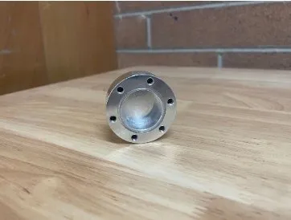
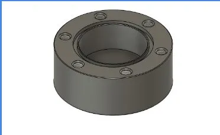
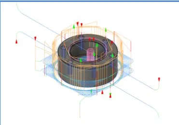

Titans of CNC 3M
CTE Engineering Pathway — Pacific Grove High School
My Role
CAD and CAM in Fusion 360, and CNC machining.



Advanced Titans of CNC part featuring curved surface finishing. Required careful selection of stepover and ball-end mill parameters to achieve a smooth surface finish.
Process
- CAD modeled in Fusion 360
- CAM toolpaths generated in Fusion 360
- Machined on Tormach 770 CNC mill